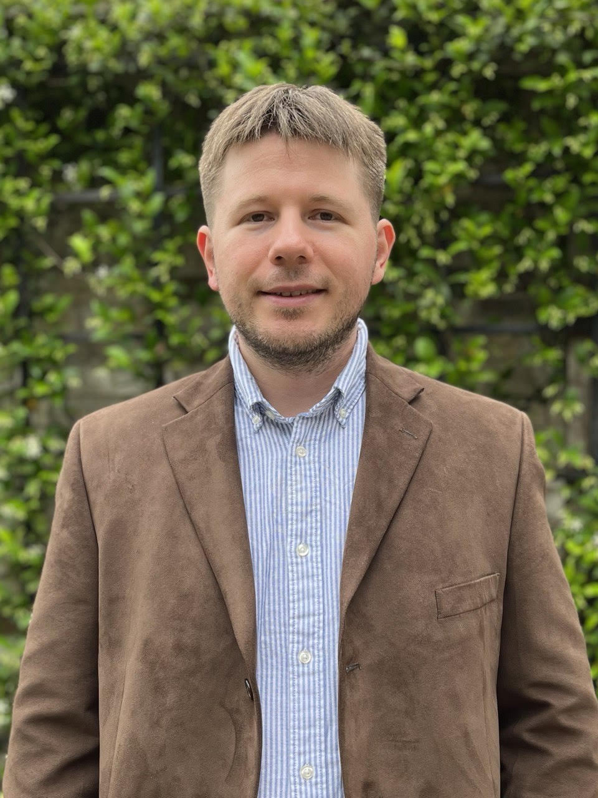

Current Graduate Students

Wesley Forbes
Department of Computer Science, Boise State University.
Alumni
Miu (Andy) L. Lau
2023-. BAE Systems, Washington, D.C.
2018-2023. Department of Computer Science, Boise State University. Andy was a Ph.D. student who has been working with me since he was an undergraduate. Later, he stayed with us and declined offers from other top universities. His research focuses on algorithims on automated data analysis and multiscale simulations of materials using MOOSE/MARMOT/BISON.
Andy won DOE Nuclear Physics AI Hackathon